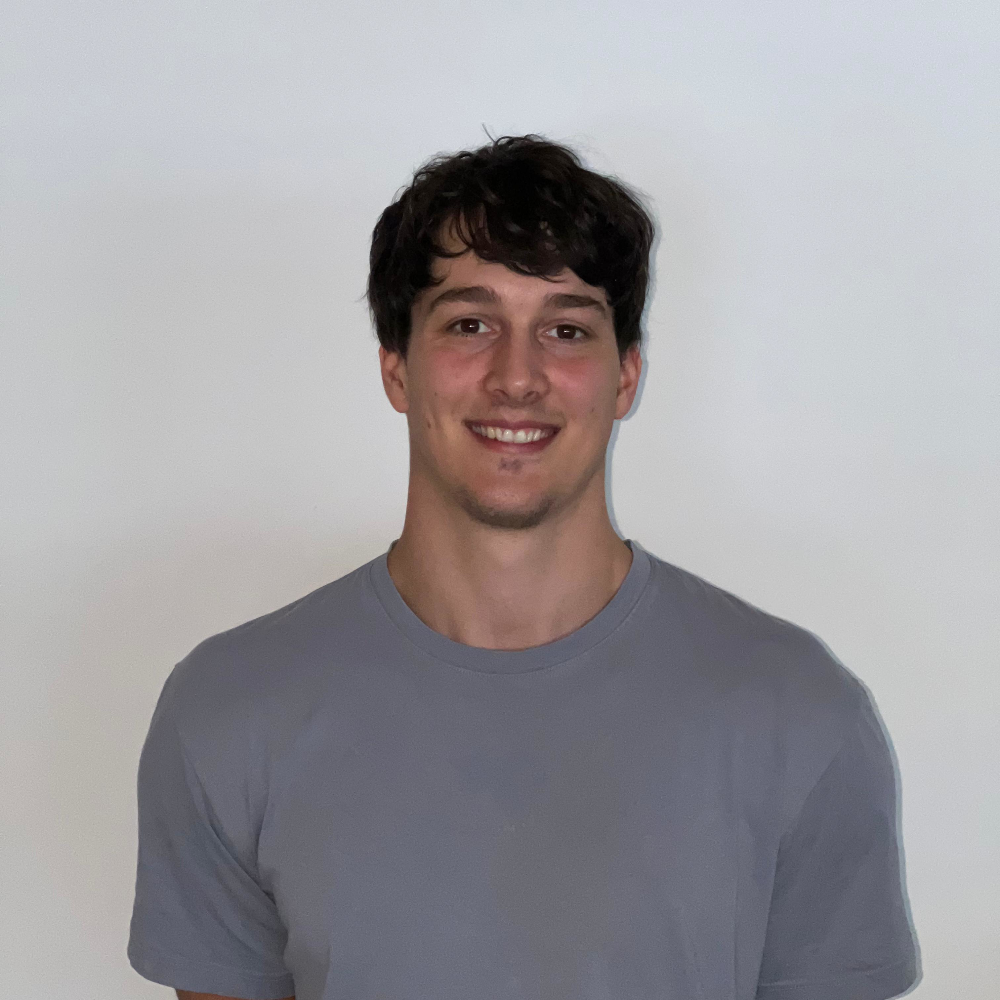

jan kompatscher

Ellis PhD-Student in Professor
Antti Oulasvirta's
Computational Behavior Lab at Aalto University, Finland. Working on
simulation of human decision-making through online Reinforcement Learning. Interests lie in Machine
Learning, Software Engineering, Explainable AI, and Visualization.
Education
- Ph.D. with Ellis program
Aalto University Dec. 2024 - Dec. 2028
- M.Sc. in Human-Computer Interaction and Design
Aalto University and University of Trento, Sept. 2022 - Oct. 2024
120 ECTS GPA 97.66% (graduated with honours)
- B.Sc. in Visual Computing
TU Wien, Sept. 2016 – Mar. 2021
180 ECTS GPA 80.72%
- Exchange Program in Computer Science
University of Calabria, Mar. 2018 – July 2018
21 ECTS GPA 81.43%
Employment
- PhD-Student
Aalto University, Computational Behavior Lab, Dec. 2024 - Present, Espoo, Finland
Research on human modeling through RL
- Research Assistant
Aalto University, Computational Behavior Lab, Nov. 2024 - Present, Espoo, Finland
Research on visualization for RLHF
Aalto University, Computational Behavior Lab, Mar. - Jul. 2023, Espoo, Finland
Research on modeling human behavior when looking at information visualizations
- Developer
EOS Solutions, Mar. 2021 - Feb. 2023, Oct. 2023 - Mar. 2024, Bozen, Italy
Developing customizations of Microsoft Dynamics Business Central (ERP Software)
- Teacher (7th & 8th grade)
Mittelschule Leo Santifaller Kastelruth, Dec. 2020 - Feb. 2021, Kastelruth, Italy
Teacher of German, History and Geography
- Junior Developer
Naramis, professional restaurant software, Jul. – Sep. 2018, Jul. – Sep. 2019, Völs am Schlern,
Italy
Migration of the software from one framework to another
Publications
- Kompatscher Jan, Danqing Shi, Giovanna Varni, Tino Weinkauf, Antti Oulasvirta. Interactive Group-
wise Comparison Can Improve the Efficiency of RLHF. Proceedings of CGF 2025 (in preparation).
- Kompatscher Jan, Giovanna Varni. Interactive
Groupwise
Comparison for Faster Reinforcement Learning from Human
Feedback. Master’s thesis, Aalto University, September 2024.
- Kompatscher Jan, Roy Alia Asiku, Filippo Gerin, Alessio Zeni. Detection of Glaciers and Equilibrium
Line Altitude (ELA) for Trentino Province Using Remote Sensing Methods. Team 8, Public AI Chal-
lenge 2023, December 2023. Mentored by Christian Casarotto, Francesca Bovolo, Milad Niroumand
Jadidi.
- Kompatscher Jan, Hsiang-Yun Wu. Automatic
Gradient-Preserving Stencilization of Raster Images. Bachelor’s thesis,
TU Wien, March 2021.
Awards
- 1st Place, Public AI Challenge Trento - Developed an ML model for detecting glaciers and
equilibrium line altitude (ELA), Public AI Challenge 2023.